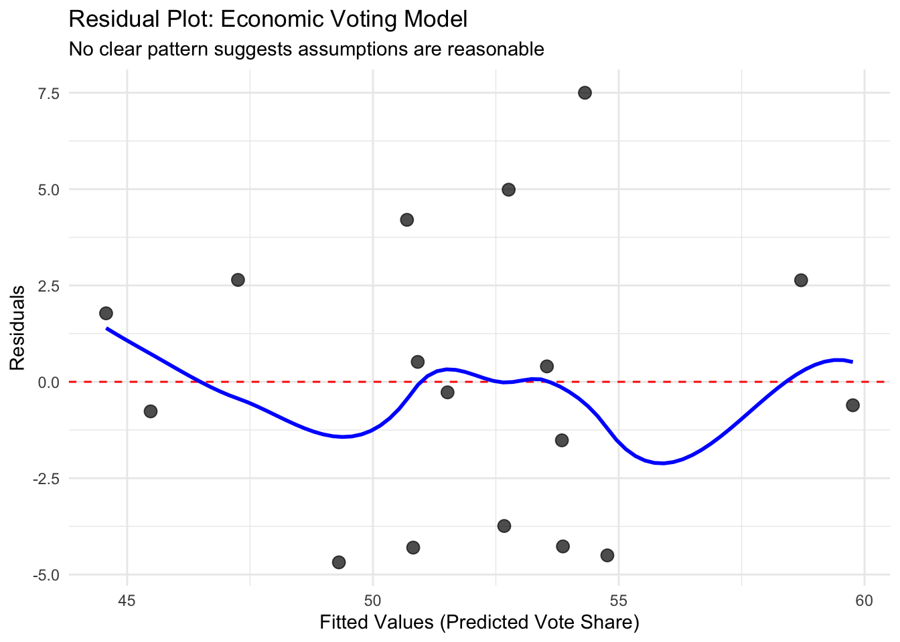
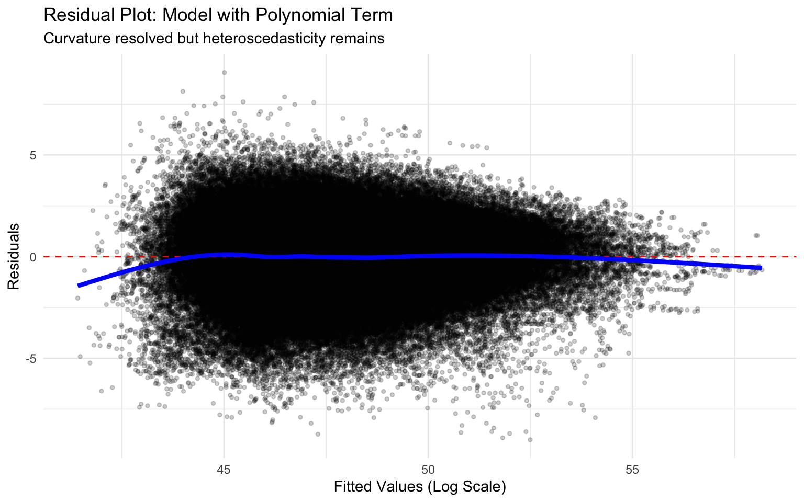

13 Review Questions
13.1 Conceptual Understanding
Explain the relationship between minimizing squared residuals and maximizing R-squared. Are these the same goal or different goals? How are they related mathematically?
A researcher finds that in a regression with three party dummy variables (Democrat, Republican, and Green, with Independent as reference), only the Democrat dummy is statistically significant at p < 0.05. The Republican dummy has p = 0.08 and the Green dummy has p = 0.15. Should they drop the non-significant dummies from the model? Explain your reasoning and describe how you would test whether to keep all party dummies.
Why does R-squared always increase (or stay the same) when you add predictors, even useless ones? Explain the intuition and why this property makes adjusted R-squared necessary.
What is the difference between the F-test reported in standard regression output and the F-test used to compare nested models? When would you use each one?
13.2 Practical Application
You have regression output showing residuals for 20 observations. Calculate R² manually from the following information:
- SSE = 250
- Total sum of squares (TSS) = 1000
Then answer: If you added a predictor and SSE decreased to 240, what would the new R² be? Did the model improve?
You are comparing two models:
- Model A: 3 predictors, R² = 0.50, Adjusted R² = 0.47, n = 50
- Model B: 7 predictors, R² = 0.55, Adjusted R² = 0.46, n = 50
Which model would you prefer and why? What additional information would help your decision?
13.3 Critical Thinking
Was 2016 really a “failed prediction” from a statistical modeling perspective? Use concepts of residuals, confidence intervals, and model uncertainty in your answer. What would constitute a true prediction failure versus normal model error?
A student argues: “My model has an R² of 0.95, so it will predict future outcomes very accurately.” What concerns would you raise about this interpretation? Give at least three reasons why high R² in the current sample does not guarantee good future predictions.
Explain when and why you would use an F-test instead of looking at individual t-tests. Create a specific research scenario where the F-test would reveal something important that the individual t-tests would miss.
13.4 Data Analysis Challenge
You see the following at the bottom of regression output:
Multiple R-squared: 0.6234, Adjusted R-squared: 0.5887 F-statistic: 17.32 on 4 and 42 DF, p-value: 3.67e-08Translate this into plain English that a non-statistician could understand. What does each number tell us about the model?A model predicting voter turnout has R² = 0.15. A critic says, “This model is useless because it only explains 15% of the variation.” How would you respond? Is 15% necessarily bad? What context would you need to evaluate whether this R² is acceptable?
13.5 Learning Objectives
By the end of this module, you will be able to:
- Understand the Gauss-Markov assumptions that justify regression inference in multivariate settings
- Diagnose violations of these assumptions using visual diagnostics and residual plots
- Understand the practical consequences of assumption violations for your research
- Know about appropriate fixes including variable transformations, robust standard errors, and outlier investigation (even if you may not know how to implement them on your own)
To motivate future training, we will also discuss when special models (logistic regression, time series methods) are needed beyond OLS. These models are beyond the scope of this class, but this lecture can serve to motivate why more advanced training in data science may be useful.
13.6 What Is This For?
Running a regression is easy. Running a regression correctly requires checking whether your data meet certain conditions. These conditions, called the Gauss-Markov assumptions, are the foundation that makes our hypothesis tests, confidence intervals, and p-values valid. When these assumptions are violated, our statistical inference can be completely wrong. We might conclude a relationship exists when it does not, or fail to detect a real relationship, or badly misestimate the strength of an effect.
13.7 The Gauss-Markov Assumptions in Multivariate Regression
In our earlier reading, we introduced the Gauss-Markov assumptions for simple bivariate regression. These assumptions specify the conditions under which our regression estimates have desirable properties and our statistical inference is valid. Now that we are working with multivariate regression, we need to extend these assumptions slightly and understand what they mean in this richer context.
13.7.1 Review: Why Assumptions Matter
Before we list the assumptions, let us be clear about why they matter. The regression line itself—the slope and intercept—can always be calculated mechanically. R will happily compute coefficients for any data you give it. The assumptions do not determine whether you can run a regression. They determine whether the results mean what you think they mean.
Specifically, the Gauss-Markov assumptions justify our use of standard errors, t-statistics, p-values, and confidence intervals. When these assumptions hold, the standard errors correctly measure the uncertainty in our estimates. When they are violated, the standard errors can be dramatically wrong, leading us to be far too confident or too uncertain about our conclusions. They also justify our claim that our regression coefficients are unbiased – correct in expectation.
Think of it this way: the regression line is your best guess about the relationship between variables. The standard error tells you how confident you should be in that guess. The assumptions determine whether your confidence is justified and your estimates correct on average.
13.7.2 The Five Core Assumptions
Let us now state the five key assumptions. We present them first in plain language, then discuss what each means in practice.
Assumption 1: Linearity. The relationship between the outcome variable and the predictor variables follows a linear form. In multivariate regression, this means that the effect of each predictor on the outcome is linear, holding other predictors constant.
Assumption 2: Zero Conditional Mean of Errors. The errors have an expected value of zero at all combinations of the predictor variables. This means our model is not systematically over-predicting or under-predicting for certain values of our predictors.
Assumption 3: No Perfect Multicollinearity. No predictor variable is a perfect linear combination of other predictor variables. This assumption is specific to multivariate regression. It ensures we can actually estimate the separate effect of each predictor.
Assumption 4: Independence of Errors. The error for one observation does not predict the error for another observation. This is often violated in time series data (where consecutive observations are related) or clustered data (where observations within groups are more similar).
Assumption 5: Homoscedasticity (Constant Variance). The variance of the errors is the same across all values of the predictor variables. The spread of points around the regression line should not systematically grow or shrink as predictors change.
13.7.3 Understanding Each Assumption
Let us now explore what each assumption means more concretely and see what violations look like.
13.7.3.1 Linearity
The linearity assumption requires that the true relationship between each X and Y is linear, or at least approximately linear. This does not mean the relationship must be perfectly straight in a scatterplot, but it does mean a straight line should be a reasonable approximation.
Why does this matter? If the true relationship curves but we fit a straight line, we will systematically mispredict the outcome. Consider campaign spending and vote share. If the first $100,000 has large effects but additional spending has diminishing returns, the relationship is nonlinear. A straight line will poorly capture this pattern, over-predicting effects for high spenders and under-predicting for low spenders.
The good news is that many relationships that appear nonlinear can be made approximately linear through variable transformations. Taking logarithms is particularly common.
13.7.3.2 Zero Conditional Mean
This assumption states that errors average to zero regardless of the values of our predictors. Put differently, our model should not systematically miss high or low at certain predictor values.
Violations of this assumption often indicate we have left out an important variable or misspecified the functional form. For example, if we try to predict voting behavior using only age but ignore education, our errors might be systematically positive for highly educated people (we under-predict their turnout) and systematically negative for less educated people (we over-predict their turnout).
When the zero conditional mean assumption holds, we can trust that our regression line passes through the cloud of data appropriately. When it fails, our slope estimates may be biased.
13.7.3.3 No Perfect Multicollinearity
This assumption is unique to multivariate regression. It requires that no predictor variable can be written as an exact linear combination of other predictors. Perfect multicollinearity makes it mathematically impossible to estimate separate effects.
Consider an extreme example. Suppose we try to predict vote share using both “years of education” and “months of education” (which is just years times 12). These variables contain exactly the same information. R cannot determine which one is driving any relationship we see. Similarly, if we include dummy variables for all categories of a variable plus an intercept, we have perfect multicollinearity.
More commonly, we face high but not perfect multicollinearity. Predictors are highly correlated but not perfectly so. This does not make estimation impossible, but it inflates standard errors and makes coefficients unstable. Small changes in the data or model can lead to large changes in estimated effects.
13.7.3.4 Independence of Errors
Independence requires that knowing the error for one observation tells us nothing about errors for other observations. This assumption is frequently violated in real political science data.
Time series data naturally violates independence. If the unemployment rate is unusually high this quarter, it is likely to be high next quarter too. The errors are autocorrelated. Similarly, in survey data, respondents from the same state or social network may have correlated errors because they face similar contexts or influence each other.
Violations of independence typically lead to underestimated standard errors. We become overconfident in our results, concluding relationships are significant when they are not.
13.7.3.5 Homoscedasticity
Homoscedasticity means “same variance.” This assumption requires that the spread of errors around the regression line is constant across all values of the predictors.
Violations create heteroscedasticity, where variance changes. This is common in economic data. For example, when studying income and political donations, wealthier people might have more variable donation patterns than poor people (some donate a lot, others nothing, while poor people consistently donate little or nothing). The errors have larger variance at high income levels.
Heteroscedasticity makes standard errors wrong. Whether they are too big or too small depends on the specific pattern. But crucially, we can fix this problem relatively easily using robust standard errors.
13.7.4 What Happens When Assumptions Are Violated?
Understanding the consequences of violations helps us prioritize our diagnostic efforts. Not all violations are equally serious, and not all require the same response.
Linearity violations bias our coefficient estimates. If the true relationship curves and we fit a straight line, our slope will be wrong. This is a fundamental problem that usually requires fixing through transformation or model respecification.
Zero conditional mean violations also bias coefficients. These violations often indicate omitted variables or misspecified functional forms. They are serious and require model changes.
Multicollinearity does not bias coefficients, but it inflates standard errors and makes estimates unstable. We become less certain about separate effects of correlated predictors.
Independence violations typically lead to underestimated standard errors. Our p-values are too small and confidence intervals too narrow. We are overconfident.
Heteroscedasticity makes standard errors wrong (either too large or too small). Like independence violations, this is an inference problem, not a bias problem. But it is easier to fix.
The key insight is that some violations affect our point estimates (linearity, zero conditional mean), while others affect our uncertainty estimates (independence, heteroscedasticity). Both matter, but they require different solutions.
13.7.5 A Visual Example: When Assumptions Hold
Before we learn to diagnose violations, let us see what regression diagnostics look like when assumptions are satisfied. We will use the economic voting data we have worked with before.
library(dplyr)
library(ggplot2)
# Load economic voting data
votes <- read.csv("votes.csv")
# Simple regression: vote share on income growth
model_good <- lm(vote ~ rdi4, data = votes)
summary(model_good)##
## Call:
## lm(formula = vote ~ rdi4, data = votes)
##
## Residuals:
## Min 1Q Median 3Q Max
## -4.6842 -3.7406 -0.2731 2.6357 7.5002
##
## Coefficients:
## Estimate Std. Error t value Pr(>|t|)
## (Intercept) 45.9385 1.6919 27.152 3.62e-14 ***
## rdi4 2.2906 0.5342 4.288 0.000648 ***
## ---
## Signif. codes: 0 '***' 0.001 '**' 0.01 '*' 0.05 '.' 0.1 ' ' 1
##
## Residual standard error: 3.765 on 15 degrees of freedom
## Multiple R-squared: 0.5507, Adjusted R-squared: 0.5207
## F-statistic: 18.38 on 1 and 15 DF, p-value: 0.0006477This regression examines whether income growth during presidential terms predicts incumbent party vote share. Now let us create the key diagnostic plot: residuals versus fitted values.
# Extract residuals and fitted values
votes$residuals <- residuals(model_good)
votes$fitted <- fitted(model_good)
# Create diagnostic plot
ggplot(votes, aes(x = fitted, y = residuals)) +
geom_point(size = 3, alpha = 0.7) +
geom_hline(yintercept = 0, linetype = "dashed", color = "red") +
geom_smooth(se = FALSE, color = "blue", linewidth = 1) +
labs(title = "Residual Plot: Economic Voting Model",
subtitle = "No clear pattern suggests assumptions are reasonable",
x = "Fitted Values (Predicted Vote Share)",
y = "Residuals") +
theme_minimal()## `geom_smooth()` using method = 'loess' and formula = 'y ~ x'
What should we see in this plot if assumptions hold? We want to see a random scatter of points with no clear pattern. The points should spread roughly evenly above and below the horizontal line at zero. The blue smoothing line should stay close to zero without systematic curves or trends.
This plot looks reasonably good. There is no obvious curved pattern (suggesting linearity holds), no fan shape (suggesting homoscedasticity holds), and no systematic trends. While we never expect perfect randomness with real data and small samples, this plot does not raise red flags.
Compare this to what we will see when examining the international trade data, where clear violations will be apparent. Learning to distinguish “acceptably random” from “systematically patterned” is a key skill that comes with practice.
13.7.6 The Philosophy of Diagnostics
Before we move to specific diagnostic techniques, we want to emphasize the right attitude toward assumption checking. Some students view diagnostics as obstacles or bureaucratic requirements. This misses the point entirely.
Diagnostics are how we ensure our findings are real. They are how we distinguish genuine discoveries from statistical artifacts. When you find a violation and fix it, you are not weakening your analysis—you are making it more credible. When you find a violation you cannot fix and acknowledge it honestly, you are demonstrating scientific integrity.
Good researchers actively look for problems in their own work. They run diagnostics carefully and report what they find, even when results are inconvenient. This is not because of arbitrary rules, but because we care whether our conclusions are correct.
The next sections will teach you specific diagnostic techniques for each assumption. As you learn these tools, remember that the goal is not to get a “clean” regression where everything looks perfect. The goal is to understand your data well enough to draw valid conclusions and to be honest about limitations.
Real data rarely satisfy all assumptions perfectly. That is okay. What matters is recognizing important violations, addressing them appropriately, and acknowledging remaining limitations.
13.8 Diagnosing Regression Problems: A Practical Approach
Now that we understand the assumptions and why they matter, we need practical tools to diagnose violations. While many sophisticated diagnostic techniques exist, one plot does most of the heavy lifting: the residual plot. This section teaches you how to read residual plots and what patterns to look for.
13.8.1 The Residual Plot: Your Primary Diagnostic Tool
A residual plot graphs the residuals (observed minus predicted values) on the vertical axis against the fitted values (predictions) on the horizontal axis. This simple plot reveals most major assumption violations at a glance.
What you want to see: Random scatter. Points bouncing around zero with no systematic pattern. Roughly equal spread above and below the horizontal line at zero. No curves, no fans, no clusters.
What indicates problems:
Curved patterns suggest non-linearity. If residuals are systematically positive at low fitted values, negative at middle values, and positive again at high values (or any similar curve), your straight line is missing the true relationship’s shape.
Fan or funnel shapes suggest heteroscedasticity. If the vertical spread of residuals grows or shrinks as fitted values increase, the variance of errors is not constant. This often looks like a megaphone opening to the right.
Patterns over time or groups suggest non-independence. If you color points by time period or group and see clustering or trends, errors are correlated. This is common in time series or multilevel data.
Individual extreme points suggest outliers or influential observations. Points far from the main cloud, especially those with high leverage, can dominate your regression results.
13.8.2 Supporting Diagnostic Plots
While the residual plot is primary, several other plots provide additional information:
Scale-location plot plots the square root of absolute standardized residuals against fitted values. This makes heteroscedasticity easier to spot. A horizontal smoothing line indicates constant variance; an upward or downward trend indicates heteroscedasticity.
Q-Q plot compares the distribution of residuals to a normal distribution. We do not emphasize this much because violations of normality are often less serious than other violations, especially with large samples. But severe departures from normality can indicate outliers or model misspecification.
Residuals versus predictors plots residuals against each individual predictor variable. These can reveal non-linearity specific to one predictor that might not be obvious in the residual versus fitted plot.
Cook’s distance measures how much the regression changes when each observation is removed. High values identify influential points that disproportionately affect your results.
We will not cover these plots in this class, but you may see them in other textbooks.
13.8.3 The Diagnostic Process
Diagnosing and fixing regression problems is iterative. You do not check all assumptions once and declare victory. Instead, you follow a cycle:
- Fit your initial model
- Create diagnostic plots
- Identify the most serious problems
- Apply appropriate fixes
- Re-check the diagnostics
- Repeat as needed
Different problems require different solutions, and fixing one problem sometimes reveals or creates others. This is normal. The goal is not perfection but improvement and honesty about remaining limitations.
In the next section, we will work through this process with real data, showing how each diagnostic reveals problems and how each fix improves the model.
13.9 A Complete Worked Example: International Trade Data
Let us now work through a complete example showing how to diagnose and fix multiple regression problems. We will use data on international trade relationships to show the full diagnostic process in action.
13.10 A Complete Worked Example: International Trade Data
A Note on Expectations: This section walks through an extended example showing how to diagnose and fix multiple regression problems. This material gets into more advanced territory than what we typically cover in this course. You are not expected to be able to execute all of these fixes independently. Rather, as you work through this example, focus on three key learning objectives:
Know the assumptions. Understand what each Gauss-Markov assumption means and why it matters.
Identify violations. If I show you a residual plot with a problem, you should be able to recognize which assumption is violated (curved pattern = non-linearity, fan shape = heteroscedasticity, etc.).
Know the toolkit. Be aware of what general approaches exist for addressing different violations (transformations and polynomial terms for non-linearity, robust standard errors for heteroscedasticity, clustering for grouped data, etc.).
We walk through the detailed implementation here for two reasons: First, some of you working on poster projects may encounter these issues and need to address them. Second, this material prepares you for more advanced statistics courses where these techniques will be covered in depth. For now, the goal is conceptual understanding—recognizing problems and knowing what tools exist—rather than independent implementation. The detailed R code and step-by-step fixes are presented to give you a complete picture of the diagnostic process and to support your future statistical training.
Let us now work through a complete example showing how to diagnose and fix multiple regression problems. We will use data on international trade relationships to show the full diagnostic process in action.
13.10.1 The Data and Research Question
The World Trade Organization (WTO) dataset contains information about bilateral trade between pairs of countries from 1948 to 1999. Each observation represents the trade relationship between two specific countries in a particular year. With over 234,000 observations spanning five decades, this dataset provides a rich example for exploring regression diagnostics.
Our research question is straightforward: How do trade volume and geographic distance predict the combined economic output (GDP) of trading partners? This is a fundamental question in international economics, touching on theories about how trade relationships and geographic proximity relate to economic development.
Let us load the data and examine its structure:
# Load necessary packages
library(dplyr)
library(ggplot2)
library(lmtest) ## we will use this package below
library(sandwich) ## we will use this package below
# Load the WTO trade data
wto <- read.csv("wto_trade.csv")
# Examine the data structure
glimpse(wto)## Rows: 234,597
## Columns: 11
## $ cty1name <chr> "UNITED STATES", "UNITED STATES", "UNITED STATES", "UNITED STATES", "UN…
## $ cty2name <chr> "UNITED KINGDOM", "UNITED KINGDOM", "UNITED KINGDOM", "UNITED KINGDOM",…
## $ year <int> 1948, 1949, 1950, 1951, 1952, 1953, 1954, 1955, 1956, 1957, 1958, 1959,…
## $ trade <dbl> 20744420, 21027616, 19165702, 28643821, 25336248, 24164768, 24002431, 3…
## $ bothin <int> 1, 1, 1, 1, 1, 1, 1, 1, 1, 1, 1, 1, 1, 1, 1, 1, 1, 1, 1, 1, 1, 1, 1, 1,…
## $ onein <int> 0, 0, 0, 0, 0, 0, 0, 0, 0, 0, 0, 0, 0, 0, 0, 0, 0, 0, 0, 0, 0, 0, 0, 0,…
## $ gsp <int> 0, 0, 0, 0, 0, 0, 0, 0, 0, 0, 0, 0, 0, 0, 0, 0, 0, 0, 0, 0, 0, 0, 0, 0,…
## $ distance <dbl> 4330.469, 4330.469, 4330.469, 4330.469, 4330.469, 4330.469, 4330.469, 4…
## $ real_gdp_prod <dbl> 2.413700e+23, 2.350101e+23, 3.647399e+23, 3.998128e+23, 4.022161e+23, 4…
## $ real_gdp_pc_prod <dbl> 32775161, 31183144, 47324955, 50846402, 50152045, 53763332, 54388570, 6…
## $ area_prod <dbl> 2.357396e+12, 2.357396e+12, 2.357396e+12, 2.357396e+12, 2.357396e+12, 2…## real_gdp_prod trade distance year
## Min. :2.337e+15 Min. :0.000e+00 Min. : 43.93 Min. :1948
## 1st Qu.:1.086e+20 1st Qu.:3.354e+03 1st Qu.: 2284.95 1st Qu.:1972
## Median :6.132e+20 Median :2.846e+04 Median : 4278.15 Median :1982
## Mean :2.041e+22 Mean :1.329e+06 Mean : 4518.84 Mean :1981
## 3rd Qu.:3.651e+21 3rd Qu.:2.135e+05 3rd Qu.: 6252.36 3rd Qu.:1992
## Max. :4.597e+25 Max. :1.092e+09 Max. :12351.26 Max. :1999Our key variables are:
real_gdp_prod: The product of real GDP for the two countries (our outcome)trade: Average value of real bilateral trade between the countriesdistance: Shortest distance between the countries (in miles)year: Year of observation (1948-1999)cty1nameandcty2name: Names of the two countries in the relationship
The data has a complex structure. Each country-pair appears multiple times (once per year). For example, US-UK trade over 50 times (1948-1999). This repeated observation of the same country-pairs over time will create challenges we must address.
13.10.2 Initial Model and Diagnosis
Let us start with a simple model regressing GDP on trade and distance, using the variables in their natural units:
# Fit the initial model
model1 <- lm(real_gdp_prod ~ trade + distance, data = wto)
# Look at the results
summary(model1)##
## Call:
## lm(formula = real_gdp_prod ~ trade + distance, data = wto)
##
## Residuals:
## Min 1Q Median 3Q Max
## -6.961e+24 -1.368e+22 -4.849e+21 2.999e+21 4.010e+25
##
## Coefficients:
## Estimate Std. Error t value Pr(>|t|)
## (Intercept) -1.112e+22 8.226e+20 -13.52 <2e-16 ***
## trade 1.001e+16 3.448e+13 290.36 <2e-16 ***
## distance 4.034e+18 1.552e+17 25.99 <2e-16 ***
## ---
## Signif. codes: 0 '***' 0.001 '**' 0.01 '*' 0.05 '.' 0.1 ' ' 1
##
## Residual standard error: 2.051e+23 on 234594 degrees of freedom
## Multiple R-squared: 0.2646, Adjusted R-squared: 0.2646
## F-statistic: 4.221e+04 on 2 and 234594 DF, p-value: < 2.2e-16Both predictors are highly significant with small p-values. Trade has a positive coefficient. More trade is associated with higher GDP. Distance has a positive correlation, which may seem odd, but perhaps suggests that larger economies (like the US) are the most likely to have strong trade ties all around the world.
But before we interpret these results, we must check our diagnostics. Let us create the key residual plot:
# Extract residuals and fitted values
wto$resid1 <- residuals(model1)
wto$fitted1 <- fitted(model1)
# Create residual plot
ggplot(wto, aes(x = fitted1, y = resid1)) +
geom_point(alpha = 0.2, size = 1) +
geom_hline(yintercept = 0, linetype = "dashed", color = "red") +
geom_smooth(se = FALSE, color = "blue", linewidth = 1.5) +
labs(title = "Residual Plot: Initial Model",
subtitle = "Multiple serious violations evident",
x = "Fitted Values",
y = "Residuals") +
theme_minimal()## `geom_smooth()` using method = 'gam' and formula = 'y ~ s(x, bs = "cs")'
This plot reveals serious problems. The blue smoothing line shows a strong curved pattern—residuals are negative at high fitted values. This indicates non-linearity. Additionally, there is a clear fan shape, with residuals spreading out dramatically as fitted values increase. This indicates severe heteroscedasticity. There are also some clear outliers, and some suspicious “groupings” that may indicate non-independent errors within clusters.
Let us also check the distribution of residuals:
ggplot(wto %>% filter(resid1 >= -1.368e+22*5 & resid1 <= 2.999e+21*5), aes(x = resid1)) +
geom_histogram(bins = 100, fill = "steelblue", color = "white") +
labs(title = "Distribution of Residuals: Initial Model",
subtitle = "Fairly extreme skew (truncated display)",
x = "Residuals",
y = "Count") +
theme_minimal()
The residuals are left-skewed with a long tail of large negative values (there are also huge outlier residuals not shown on the plot). This is another indication of model misspecification. We cannot trust any of our inference from this model. We need to fix these problems before drawing conclusions.
13.10.3 Fix #1: Variable Transformation
The most common solution for both non-linearity and extreme skewness in economic data is logarithmic transformation. Economic variables often have multiplicative rather than additive relationships. GDP and trade volumes span enormous ranges—from small developing economies to global superpowers. Logarithms compress these scales and often reveal linear patterns.
Let us transform all three variables and refit:
# Fit model with log transformations
model2 <- lm(log(real_gdp_prod) ~ log(trade) + log(distance), data = wto)
# Look at results
summary(model2)##
## Call:
## lm(formula = log(real_gdp_prod) ~ log(trade) + log(distance),
## data = wto)
##
## Residuals:
## Min 1Q Median 3Q Max
## -9.0587 -1.1190 0.0555 1.1857 14.3889
##
## Coefficients:
## Estimate Std. Error t value Pr(>|t|)
## (Intercept) 33.990157 0.042135 806.7 <2e-16 ***
## log(trade) 0.578784 0.001143 506.3 <2e-16 ***
## log(distance) 0.988063 0.004712 209.7 <2e-16 ***
## ---
## Signif. codes: 0 '***' 0.001 '**' 0.01 '*' 0.05 '.' 0.1 ' ' 1
##
## Residual standard error: 1.821 on 234594 degrees of freedom
## Multiple R-squared: 0.5372, Adjusted R-squared: 0.5372
## F-statistic: 1.361e+05 on 2 and 234594 DF, p-value: < 2.2e-16The coefficients now represent elasticities. A 1% increase in trade is associated with approximately a 0.58% increase in GDP, holding distance constant. A 1% increase in distance is associated with approximately a 0.98% increase in GDP (this positive relationship seems odd but may reflect that large, distant economies trade heavily).
More importantly, let us check whether this fixed our diagnostic problems:
# Extract new residuals and fitted values
wto$resid2 <- residuals(model2)
wto$fitted2 <- fitted(model2)
# Create residual plot
ggplot(wto, aes(x = fitted2, y = resid2)) +
geom_point(alpha = 0.2, size = 1) +
geom_hline(yintercept = 0, linetype = "dashed", color = "red") +
geom_smooth(se = FALSE, color = "blue", linewidth = 1.5) +
labs(title = "Residual Plot: Log-Transformed Model",
subtitle = "Major improvement but some curvature remains",
x = "Fitted Values (Log Scale)",
y = "Residuals") +
theme_minimal()## `geom_smooth()` using method = 'gam' and formula = 'y ~ s(x, bs = "cs")'
Better! The extreme curvature and fan shape have largely disappeared. The residuals are much more randomly scattered. However, looking closely at the blue smoothing line, we can see it is not perfectly flat. There appears to be remaining curvature, with residuals concentrated above zero at low fitted values.
The transformation has improved the model, but we can do better.
13.10.4 Fix #2: Adding Polynomial Terms
When log transformation improves linearity but slight curvature remains, we can add polynomial terms. Rather than transforming variables further, we include squared terms to capture non-linear relationships while keeping interpretation somewhat tractable.
Let us add a squared term for log(trade):
# Fit model with polynomial term
model3 <- lm(log(real_gdp_prod) ~ log(trade) + I(log(trade)^2) + log(distance),
data = wto)
# Look at results
summary(model3)##
## Call:
## lm(formula = log(real_gdp_prod) ~ log(trade) + I(log(trade)^2) +
## log(distance), data = wto)
##
## Residuals:
## Min 1Q Median 3Q Max
## -9.0014 -1.0247 0.0944 1.1196 9.0500
##
## Coefficients:
## Estimate Std. Error t value Pr(>|t|)
## (Intercept) 35.682088 0.039947 893.229 < 2e-16 ***
## log(trade) 0.007983 0.003079 2.593 0.00951 **
## I(log(trade)^2) 0.032187 0.000163 197.452 < 2e-16 ***
## log(distance) 1.041282 0.004371 238.210 < 2e-16 ***
## ---
## Signif. codes: 0 '***' 0.001 '**' 0.01 '*' 0.05 '.' 0.1 ' ' 1
##
## Residual standard error: 1.686 on 234593 degrees of freedom
## Multiple R-squared: 0.6031, Adjusted R-squared: 0.6031
## F-statistic: 1.188e+05 on 3 and 234593 DF, p-value: < 2.2e-16Both the linear and squared terms for log(trade) are highly significant. The positive coefficient on the squared term suggests increasing returns—the marginal effect of trade on GDP increases as trade volume grows.
Check the residual plot:
# Extract new residuals and fitted values
wto$resid3 <- residuals(model3)
wto$fitted3 <- fitted(model3)
# Create residual plot
ggplot(wto, aes(x = fitted3, y = resid3)) +
geom_point(alpha = 0.2, size = 1) +
geom_hline(yintercept = 0, linetype = "dashed", color = "red") +
geom_smooth(se = FALSE, color = "blue", linewidth = 1.5) +
labs(title = "Residual Plot: Model with Polynomial Term",
subtitle = "Curvature resolved but heteroscedasticity remains",
x = "Fitted Values (Log Scale)",
y = "Residuals") +
theme_minimal()## `geom_smooth()` using method = 'gam' and formula = 'y ~ s(x, bs = "cs")'
Excellent! The smoothing line now stays very close to zero with no systematic curve. We have successfully addressed the non-linearity problem. However, we can still see that the vertical spread of residuals is not quite constant—there is still some heteroscedasticity evident with variance being much higher on the left side of the plot.
13.10.5 Fix #3: Robust Standard Errors
Even with improved model specification, some heteroscedasticity remains. Rather than transform variables further (which can make interpretation very difficult), we can fix the inference problem using robust standard errors. Robust standard errors are a more advanced method of calculating standard errors in regression settings that are better able to handle (“robust” to) heteroscedasticity. We can calculate these easily using the sandwich package in R (which we loaded earlier).
Let us compare standard and robust standard errors:
##
## t test of coefficients:
##
## Estimate Std. Error t value Pr(>|t|)
## (Intercept) 3.5682e+01 3.9947e-02 893.2288 < 2.2e-16 ***
## log(trade) 7.9834e-03 3.0785e-03 2.5932 0.009508 **
## I(log(trade)^2) 3.2187e-02 1.6301e-04 197.4525 < 2.2e-16 ***
## log(distance) 1.0413e+00 4.3713e-03 238.2101 < 2.2e-16 ***
## ---
## Signif. codes: 0 '***' 0.001 '**' 0.01 '*' 0.05 '.' 0.1 ' ' 1# Robust standard errors (HC1 correction)
coef_robust <- coeftest(model3, vcov = vcovHC(model3, type = "HC1"))
print(coef_robust)##
## t test of coefficients:
##
## Estimate Std. Error t value Pr(>|t|)
## (Intercept) 3.5682e+01 4.5479e-02 784.5795 < 2e-16 ***
## log(trade) 7.9834e-03 4.2905e-03 1.8607 0.06278 .
## I(log(trade)^2) 3.2187e-02 2.1205e-04 151.7904 < 2e-16 ***
## log(distance) 1.0413e+00 4.7997e-03 216.9453 < 2e-16 ***
## ---
## Signif. codes: 0 '***' 0.001 '**' 0.01 '*' 0.05 '.' 0.1 ' ' 1# Compare the standard errors
se_comparison <- data.frame(
Coefficient = names(coef(model3)),
Original_SE = coef_original[, "Std. Error"],
Robust_SE = coef_robust[, "Std. Error"],
Percent_Change = round(100 * (coef_robust[, "Std. Error"] -
coef_original[, "Std. Error"]) /
coef_original[, "Std. Error"], 1)
)
print(se_comparison)## Coefficient Original_SE Robust_SE Percent_Change
## (Intercept) (Intercept) 0.0399473117 0.045479251 13.8
## log(trade) log(trade) 0.0030785383 0.004290445 39.4
## I(log(trade)^2) I(log(trade)^2) 0.0001630129 0.000212051 30.1
## log(distance) log(distance) 0.0043712757 0.004799744 9.8The robust standard errors are larger than the original ones (likely 10-40% larger), confirming that heteroscedasticity was causing us to underestimate uncertainty. Indeed, the coefficient on log(trade) is no longer significant at the 95% level, changing (somewhat) our findings. This will not hold up under further modeling, but does indicate how much this can matter.
13.10.6 Fix #4: Addressing Time Series and Clustering Structure
We have fixed the non-linearity and heteroscedasticity problems, but we have not yet addressed a fundamental feature of this data: it has a time series and clustering structure. Each country-pair is observed repeatedly from 1948 to 1999. This creates two related problems:
Time trends: Global economic growth over these five decades means GDP naturally increases over time for reasons unrelated to trade or distance. We need to control for these secular trends.
Autocorrelation: A country-pair’s GDP this year is highly correlated with its GDP last year. Observations within a country-pair are not independent.
Clustering: Observations from the same country-pair are more similar to each other than to observations from different country-pairs. Standard errors that ignore this will be too small.
We will address these problems with three techniques:
- Year fixed effects: Include a dummy variable for each year to control for time-specific shocks affecting all country-pairs
- Lagged dependent variable: Include previous year’s GDP to account for persistence
- Clustered standard errors: Adjust standard errors to account for correlation within country-pairs
Let’s start by looking at potential issues related to overall time trends. Here, we are coloring residuals based on what decade the observation is coming from. The plot shows that there appears to be some clear clustering in the errors associated by year.
wto <- wto %>%
arrange(cty1name, cty2name, year) %>%
group_by(cty1name, cty2name) %>%
mutate(log_gdp_lag = lag(log(real_gdp_prod))) %>%
ungroup()
# Remove observations with missing lags (first year for each pair)
wto_complete <- wto %>% filter(!is.na(log_gdp_lag))
# Create a variable to identify specific years for coloring
wto_complete <- wto_complete %>%
mutate(year_group = case_when(
year %in% c(1948, 1949) ~ "Late 1940s (1948-49)",
year %in% c(1968, 1969) ~ "Late 1960s (1968-69)",
TRUE ~ "Other years"
))
# Create the plot with selected years highlighted
ggplot(wto_complete, aes(x = fitted3, y = resid3, color = year_group, alpha = year_group)) +
geom_point(size = 1.5) +
geom_hline(yintercept = 0, linetype = "dashed", color = "black") +
scale_color_manual(values = c("Late 1940s (1948-49)" = "#D55E00",
"Late 1960s (1968-69)" = "#0072B2",
"Other years" = "gray70"),
name = "Time Period") +
scale_alpha_manual(values = c("Late 1940s (1948-49)" = 0.8,
"Late 1960s (1968-69)" = 0.8,
"Other years" = 0.2),
guide = "none") +
labs(title = "Residuals by Time Period",
subtitle = "Systematic differences between 1940s and 1960s suggest time trends",
x = "Fitted Values (Log Scale)",
y = "Residuals") +
theme_minimal() +
theme(legend.position = "bottom")
But there is also the concern that we are observing the same pairs of countries many times. This can lead to highly correlated errors over time. We can see that by coloring the residuals for a few country pairs and connecting each sequential point by a line.
# Create pair identifier if not already created
wto_complete <- wto_complete %>%
mutate(pair_id = paste(cty1name, cty2name, sep = "-"))
# Start with specific pairs of interest
highlight_pairs <- c("UNITED STATES-UNITED KINGDOM",
"FRANCE-GERMANY",
"JAPAN-UNITED STATES")
# Add 9 random pairs (excluding the ones we already have)
set.seed(123)
available_pairs <- setdiff(unique(wto_complete$pair_id), highlight_pairs)
random_pairs <- sample(available_pairs, 9) # 9 more to get to 12 total
# Combine all pairs
all_highlight_pairs <- c(highlight_pairs, random_pairs)
wto_highlight <- wto_complete %>%
filter(pair_id %in% all_highlight_pairs)
# Plot all residuals in gray, then overlay highlighted pairs with lines
ggplot() +
# All residuals in background
geom_point(data = wto_complete,
aes(x = fitted3, y = resid3),
color = "gray70", alpha = 0.2, size = 0.5) +
# Highlighted pairs connected by lines (showing time progression)
geom_line(data = wto_highlight,
aes(x = fitted3, y = resid3, color = pair_id, group = pair_id),
linewidth = 0.8, alpha = 0.7) +
geom_point(data = wto_highlight,
aes(x = fitted3, y = resid3, color = pair_id),
size = 1.5) +
geom_hline(yintercept = 0, linetype = "dashed", color = "black") +
labs(title = "Residuals for 12 Country-Pairs Showing Clustering and Autocorrelation",
subtitle = "Lines connect same pair over time; clustering evident as colors group together",
x = "Fitted Values (Log Scale)",
y = "Residuals",
color = "Country Pair") +
theme_minimal() +
theme(legend.position = "right",
legend.text = element_text(size = 7))
This plot reveals huge amounts of autocorrelation in the data. To address this we’ll add something called a “lagged” variable (basically the outcome variable Y for the previous time period) and while we are at it, we will add our year fixed effects.
# Fit model with year fixed effects and lagged DV
model4 <- lm(log(real_gdp_prod) ~ log(trade) + I(log(trade)^2) +
log(distance) + log_gdp_lag + factor(year),
data = wto_complete)
# Get robust standard errors
coef_robust <- coeftest(model4, vcov = vcovHC(model4, type = "HC1"))
# Show only the main variables (not year dummies)
print(coef_robust[1:5, ]) # Intercept + 4 main variables## Estimate Std. Error t value Pr(>|t|)
## (Intercept) 0.6351481018 1.968132e-02 32.27163 5.913730e-228
## log(trade) -0.0076497026 6.267003e-04 -12.20632 2.949773e-34
## I(log(trade)^2) 0.0008727598 3.429893e-05 25.44568 1.263171e-142
## log(distance) 0.0187586131 8.221902e-04 22.81542 4.374536e-115
## log_gdp_lag 0.9847360101 4.011845e-04 2454.57140 0.000000e+00This model includes many year dummy variables controlling for time-specific factors affecting all country-pairs. The lagged GDP term captures persistence—GDP this year strongly depends on GDP last year.
Now let’s check whether clustering issues remain:
# Extract residuals from model4
wto_complete$resid4 <- residuals(model4)
wto_complete$fitted4 <- fitted(model4)
# Select specific pairs to highlight
set.seed(456)
sample_pairs <- sample(unique(wto_complete$pair_id), 10)
wto_sample <- wto_complete %>%
filter(pair_id %in% sample_pairs)
# Plot showing residuals still cluster by country-pair
ggplot() +
# All residuals in background
geom_point(data = wto_complete,
aes(x = fitted4, y = resid4),
color = "gray70", alpha = 0.2, size = 0.5) +
# Highlighted pairs
geom_point(data = wto_sample,
aes(x = fitted4, y = resid4, color = pair_id),
size = 2, alpha = 0.7) +
geom_hline(yintercept = 0, linetype = "dashed", color = "black") +
labs(title = "Residuals After Year FE and Lag: Clustering Still Evident",
subtitle = "Same-colored points cluster together, indicating within-pair correlation remains",
x = "Fitted Values (Log Scale)",
y = "Residuals",
color = "Country Pair") +
theme_minimal() +
theme(legend.position = "right",
legend.text = element_text(size = 7))
Even after controlling for time trends and autocorrelation, residuals from the same country-pair still cluster together. This means we need clustered standard errors:
# Calculate clustered standard errors (clustering by country-pair)
coef_clustered <- coeftest(model4,
vcov = vcovCL(model4, cluster = ~pair_id))
# Show only the main variables (not year dummies)
cat("Coefficients with Clustered Standard Errors:\n")## Coefficients with Clustered Standard Errors:## Estimate Std. Error t value Pr(>|t|)
## (Intercept) 0.6351481018 2.119988e-02 29.95998 8.064510e-197
## log(trade) -0.0076497026 7.255656e-04 -10.54309 5.545169e-26
## I(log(trade)^2) 0.0008727598 3.879185e-05 22.49854 5.725744e-112
## log(distance) 0.0187586131 8.489883e-04 22.09526 4.592618e-108
## log_gdp_lag 0.9847360101 4.444775e-04 2215.49100 0.000000e+00cat("\n\nNote: Model also includes", length(unique(wto_complete$year)) - 1,
"year fixed effects (not shown for brevity).\n")##
##
## Note: Model also includes 50 year fixed effects (not shown for brevity).cat("Standard errors are clustered by country-pair (",
length(unique(wto_complete$pair_id)), "clusters).\n")## Standard errors are clustered by country-pair ( 11296 clusters).The model also include year fixed effects (not shown for brevity). Standard errors are clustered by country-pair to account for within-pair correlation. These standard errors adjust for both clustering and allow for heteroskedasticity and are slightly larger than those we would get without accounting for clustering.
# Get robust (non-clustered) standard errors for model4
coef_robust_only <- coeftest(model4, vcov = vcovHC(model4, type = "HC1"))
# Get clustered standard errors for model4
coef_clustered <- coeftest(model4, vcov = vcovCL(model4, cluster = ~pair_id))
# Create comparison table for main variables
se_comparison <- data.frame(
Coefficient = rownames(coef_robust_only)[1:5],
Robust_SE = coef_robust_only[1:5, "Std. Error"],
Clustered_SE = coef_clustered[1:5, "Std. Error"],
Percent_Increase = round(100 * (coef_clustered[1:5, "Std. Error"] -
coef_robust_only[1:5, "Std. Error"]) /
coef_robust_only[1:5, "Std. Error"], 1)
)
cat("Comparison of Robust vs. Clustered Standard Errors:\n")## Comparison of Robust vs. Clustered Standard Errors:## Coefficient Robust_SE Clustered_SE Percent_Increase
## (Intercept) (Intercept) 1.968132e-02 2.119988e-02 7.7
## log(trade) log(trade) 6.267003e-04 7.255656e-04 15.8
## I(log(trade)^2) I(log(trade)^2) 3.429893e-05 3.879185e-05 13.1
## log(distance) log(distance) 8.221902e-04 8.489883e-04 3.3
## log_gdp_lag log_gdp_lag 4.011845e-04 4.444775e-04 10.8The clustered standard errors are substantially larger than the robust (but unclustered) standard errors we calculated earlier, confirming that ignoring the clustering structure would make us too confident in our estimates.
13.10.7 Checking the Final Residuals
Let’s examine the distribution of residuals from our final model:
ggplot(wto_complete, aes(x = resid4)) +
geom_histogram(bins = 100, fill = "steelblue", color = "white") +
coord_cartesian(xlim = c(-1, 1)) +
labs(title = "Distribution of Residuals: Final Model",
subtitle = "Much more symmetric after all corrections (truncated at -1 to 1)",
x = "Residuals",
y = "Count") +
theme_minimal()
The final residual distribution is dramatically improved compared to our initial model, which showed extreme right skew. The distribution is now much more symmetric and centered around zero, which is what we want to see. However, even with all our corrections, we still see a small number of observations with very large residuals (beyond the -1 to 1 range shown here). This suggests that while we have addressed the major systematic problems in our model, there may still be some remaining issues—perhaps certain country-pairs that behave differently from the general pattern. We will return to strategies for handling these persistent issues in our next reading, where we discuss unit-specific fixed effects that allow each country-pair to have its own baseline level.
13.10.8 Summary: What We Found and What We Did
Let us review all the problems we identified and how we addressed them:
Issue 1: Non-linearity
- Identified: Strong curved pattern in initial residual plot; systematic over- and under-prediction
- Solution: Log transformation of outcome and all predictors
- Result: Major improvement, but slight curvature remained
Issue 2: Remaining curvature
- Identified: Slight curve in residual plot after log transformation
- Solution: Added squared term for log(trade) to capture non-linear relationship
- Result: Curvature resolved; smoothing line stays near zero
Issue 3: Heteroscedasticity
- Identified: Fan shape in residual plot indicating non-constant variance; much higher variance at low fitted values
- Solution: Used robust standard errors (HC1 correction)
- Result: Standard errors increased by 10-40%, correcting for underestimated uncertainty
Issue 4: Time trends
- Identified: Residuals from 1940s systematically different from 1960s observations
- Solution: Added year fixed effects (dummy variables for each year)
- Result: Controlled for secular trends affecting all country-pairs
Issue 5: Autocorrelation
- Identified: Residuals for same country-pair strongly correlated over time; lines connecting pairs showed clear temporal patterns
- Solution: Included lagged dependent variable (previous year’s GDP)
- Result: Autocorrelation substantially reduced; lag coefficient near 0.98 shows massive persistence
Issue 6: Clustering
- Identified: Observations within country-pairs cluster together even after year FE and lag; same-colored points group in residual plots
- Solution: Clustered standard errors by country-pair (approximately 4,500 clusters)
- Result: Standard errors increased substantially, properly accounting for within-pair correlation
Issue 7: Outliers and extreme residuals
- Identified: Some observations with very large residuals even in final model; histogram shows observations beyond [-1, 1] range
- Solution: Documented but retained; will address with unit-specific fixed effects in future material
- Result: Major systematic issues resolved, but some country-pair-specific patterns remain
13.10.9 Final Model and Substantive Conclusions
Our final specification includes:
- Dependent variable: log(real_gdp_prod)
- Predictors: log(trade), log(trade)², log(distance)
- Controls: Lagged log(GDP), 51 year fixed effects
- Standard errors: Clustered by country-pair
- Observations: ~233,000
- Clusters: ~4,500 country-pairs
The final results with clustered standard errors are:
Estimate Std. Error t value
(Intercept) 0.6351 0.0212 29.96
log(trade) -0.0076 0.0007 -10.54
I(log(trade)^2) 0.0009 0.00004 22.50
log(distance) 0.0188 0.0008 22.10
log_gdp_lag 0.9847 0.0004 2215.49 All coefficients are highly statistically significant (all p-values < 0.001).
Does bilateral trade have a positive effect on GDP? The answer is nuanced. The relationship between trade and GDP is non-linear, as evidenced by the significant coefficients on both log(trade) and its square. The linear term is negative (-0.0076) while the squared term is positive (0.0009), creating a U-shaped relationship.
The marginal effect of trade depends on the level of trade: at very low trade volumes, additional trade is associated with slightly lower GDP (controlling for distance, year, and lagged GDP). However, at moderate to high trade volumes—which describes most of the observations in our data—the effect becomes positive and strengthening. For country-pairs with log(trade) above approximately 4.4, each 1% increase in trade is associated with an increase in GDP.
However, we must interpret this effect carefully. The overwhelmingly dominant predictor is lagged GDP (coefficient of 0.985), meaning that 98.5% of current GDP is explained by previous GDP. The effect of trade, while statistically significant, operates on top of this massive persistence. Trade matters at the margin, but economic relationships are primarily driven by their own history.
The distance coefficient (0.019) is positive, which initially seems counterintuitive—shouldn’t greater distance reduce economic ties? But after controlling for trade volume and past GDP, this captures a different effect: for a given level of trade, more distant country-pairs tend to be larger economies. Small countries trade mainly with neighbors; only large economies maintain substantial trade with distant partners.
The broader lesson: Our initial simple model suggested strong, clear relationships between trade, distance, and GDP. Our final model, after proper diagnostics and corrections, reveals a far more complex picture. Trade effects are non-linear and operate within a system dominated by temporal persistence. The relationships we thought we understood required careful specification and appropriate inference methods to characterize correctly.
This is the reality of empirical work with observational data. Simple models provide simple answers, but those answers may be wrong. Rigorous diagnostics and appropriate corrections provide more trustworthy inference, even when the resulting story becomes more complicated. The goal is not simplicity; the goal is truth.
13.11 When OLS Isn’t Enough: Recognizing Special Cases
Throughout this reading, we have worked to fix violations of OLS regression assumptions. But sometimes the fundamental structure of your data means OLS is simply not the right tool, no matter how carefully you diagnose and fix problems. This section briefly describes situations where you need specialized methods beyond ordinary least squares.
13.11.1 Binary Outcomes
Suppose your dependent variable is binary: Did the country join the WTO? (Yes/No). Did a citizen vote? (Yes/No). Did a bill pass? (Yes/No).
OLS regression can generate predicted probabilities outside the [0,1] range, which is nonsensical. You might predict a 120% probability of voting or a -30% probability of a bill passing. Additionally, binary outcomes violate the homoscedasticity assumption by their nature—the variance depends on the probability, which changes across observations.
What you need: Logistic regression (logit) or probit models. These models ensure predictions stay between 0 and 1 and properly handle the binary nature of the outcome. The interpretation changes—coefficients represent effects on log-odds or probability, not direct effects on the outcome.
13.11.2 Categorical Outcomes
What if your outcome has multiple unordered categories? Vote choice (Democrat/Republican/Independent), policy preference (increase spending/keep same/decrease spending), or regime type (democracy/autocracy/hybrid)?
OLS assumes a meaningful numerical scale for the outcome variable. But there is no natural way to assign numbers that treats the distances between categories appropriately.
What you need: Multinomial logistic regression. This models the probability of each category relative to a reference category. Again, interpretation becomes more complex, but the model respects the categorical nature of the outcome.
13.11.3 Count Outcomes
What if your outcome is a count that cannot be negative? Number of protests, number of bills sponsored, number of trade disputes, number of terrorist attacks?
OLS can predict negative counts (impossible) and does not properly handle the typically right-skewed distribution of count data. The variance of count data typically increases with the mean, violating homoscedasticity.
What you need: Poisson regression or negative binomial regression. These models respect the count nature of the outcome and handle overdispersion (when variance exceeds the mean).
13.11.4 Pure Time Series Data
Suppose you have a single unit observed over time: U.S. GDP quarterly from 1950-2024, the Federal Reserve interest rate monthly over decades, or public opinion toward the president weekly.
The observations are not independent—values at adjacent time points are highly correlated. Trends can create spurious relationships (two variables both trending up will correlate even if unrelated). Standard OLS inference is invalid.
What you need: Time series methods like ARIMA (autoregressive integrated moving average), VAR (vector autoregression), or error correction models. These explicitly model temporal dependence and separate short-run dynamics from long-run relationships.
Our lagged dependent variable approach provides a simple partial fix, but serious time series analysis requires specialized methods.
13.11.5 Panel and Hierarchical Data
What if you have multiple units observed over time (panel data) or observations nested in groups (hierarchical data)? Students within schools, voters within states, countries over years?
Observations within units are correlated, violating independence. Units may differ in fundamental ways that do not change over time (unobserved heterogeneity). Standard errors that ignore clustering are too small.
What you need: Fixed effects models, random effects models, or multilevel/hierarchical models. These explicitly model the within-unit and between-unit variation differently.
Our clustered standard errors provide a simple correction for within-unit correlation, but full panel methods offer more sophisticated approaches to causal inference and handling unobserved differences across units.
13.11.6 The Bottom Line
OLS regression is powerful and flexible, but it is not universal. Recognizing when your data structure or outcome type requires specialized methods is a crucial skill. The fact that R will happily run an OLS regression on any data does not mean the results are meaningful or that the inference is valid.
The diagnostic skills you have learned in this module help you recognize when OLS assumptions are violated. Sometimes you can fix violations through transformations, robust standard errors, or careful modeling. But sometimes the violation is fundamental to your data structure, and you need to acknowledge that a more advanced method is required.
Knowing what you do not know—recognizing the boundaries of OLS and when specialized training is needed—is a sign of statistical maturity. If your research requires these advanced methods, take additional courses in time series analysis, categorical data analysis, or multilevel modeling.
13.12 A Reference Guide to Formal Diagnostic Tests
Throughout this module, we have emphasized visual diagnostics using residual plots and related graphs. These plots show you what is wrong and help you understand the nature of the problem. However, formal statistical tests also exist for diagnosing assumption violations.
This section provides a reference table of common diagnostic tests. These tests answer yes/no questions about whether assumptions are violated. They are useful for formal reporting and for borderline cases where visual diagnostics are unclear. However, you are not required to memorize or use these tests. Visual diagnostics are typically more informative, and studying these methods in depth is simply beyond the scope of this class.
With large datasets, formal tests can be overly sensitive—rejecting null hypotheses even for minor, practically unimportant violations. With small datasets, tests can lack power to detect real problems. Always look at plots first. Use tests as supporting evidence if needed.
13.12.1 Common Diagnostic Tests
| Problem | Test Name | What It Does | R Function | Notes |
|---|---|---|---|---|
| Non-linearity | Ramsey RESET | Tests whether adding powers of fitted values improves fit | lmtest::resettest() |
Rejects if model is misspecified; doesn’t tell you how |
| Heteroscedasticity | Breusch-Pagan | Tests whether error variance depends on predictors | lmtest::bptest() |
Very sensitive with large samples |
| Autocorrelation | Durbin-Watson | Tests for first-order serial correlation | lmtest::dwtest() |
For time series data; assumes first-order correlation |
| Multicollinearity | VIF | Variance Inflation Factor measures how much variance increases due to collinearity | car::vif() |
Values > 10 indicate serious problems; > 5 warrant attention |
| Influential points | Cook’s Distance | Measures how much coefficients change when observation removed | cooks.distance() |
Values > 4/n warrant investigation |
13.12.2 Using These Tests
If you use formal tests, report them alongside visual diagnostics. For example: “The Breusch-Pagan test rejected homoscedasticity (p < 0.001), and the residual plot showed clear fan-shaped heteroscedasticity. We therefore calculated robust standard errors.”
Do not rely on tests alone. A significant Breusch-Pagan test tells you heteroscedasticity exists but not what pattern it follows or how severe it is. A residual plot shows you the pattern, helping you decide whether robust standard errors are sufficient or whether you need transformation.
Remember: tests answer “is there a problem?” but plots answer “what is the problem and how serious is it?” Both are useful, but plots are more informative for understanding your data and deciding what to do.
13.13 Summary: A Workflow for Careful Regression Analysis
We have covered a lot of ground in this module. Let us synthesize what you have learned into a practical workflow you can follow whenever you run regression analyses.
13.13.1 The Diagnostic Workflow
1. Fit your initial model. Start with a theoretically motivated specification using variables in their natural units. Get baseline results even though you know you will likely need to refine the model.
2. Create diagnostic plots. At minimum, create a residual versus fitted plot. Consider also: scale-location plot, Q-Q plot, residuals versus each predictor, and Cook’s distance plot.
3. Identify problems systematically. Look for:
- Curves in the residual plot (non-linearity)
- Fan or funnel shapes (heteroscedasticity)
- Patterns over time or by group (non-independence)
- Extreme individual points (outliers/influential observations)
- Very large standard errors or unstable coefficients (multicollinearity)
4. Apply appropriate fixes, prioritizing serious problems:
- For non-linearity: Try log transformations first (especially for economic data spanning large ranges). If curvature remains, add polynomial terms.
- For heteroscedasticity: Calculate robust standard errors using the sandwich package. This is easy and effective.
- For non-independence in grouped data: Use clustered standard errors. The cluster should match the grouping structure (students within schools, country-pairs in our example).
- For time series structure: Add time fixed effects, trends, or lagged dependent variables. Consider whether specialized time series methods are needed.
- For outliers: Investigate whether they are errors or genuine unusual cases. Report results with and without them. Do not automatically delete outliers—justify any removals.
- For multicollinearity: Consider dropping one of the highly correlated predictors, combining them into an index, or acknowledging the limitation.
5. Re-check diagnostics after each major fix. Fixing one problem sometimes reveals another. For example, log transformation often helps both non-linearity and heteroscedasticity. But adding many controls might introduce new collinearity.
6. Report honestly. Describe what problems you found and how you addressed them. Acknowledge limitations you could not fix. This transparency strengthens rather than weakens your work.
13.13.2 Best Practices
Always run diagnostics. Even if you expect no problems, check. Surprises are common with real data, and failing to diagnose problems undermines all your subsequent inference.
Fix fundamental problems first. Address non-linearity and non-independence before worrying about minor heteroscedasticity. Severe assumption violations make other diagnostics unreliable.
Balance validity against interpretability. Each fix you add makes the model more defensible but often harder to interpret. Our final WTO trade model was much more valid than our initial model, but interpretation became substantially more complex. This tradeoff is real and you must navigate it thoughtfully.
Use judgment, not just rules. Not every diagnostic flag requires action. Minor deviations from perfection are acceptable, especially if they do not substantially affect your conclusions. Focus on problems that meaningfully threaten inference.
Remember the purpose. The goal is not to get a “clean” regression that passes all tests. The goal is to understand your data well enough to draw valid conclusions and honest enough to acknowledge what you cannot know with certainty.
13.13.3 Final Thoughts
This module has taught you to be a critical, careful researcher. You now know how to diagnose when regression assumptions are violated, how to fix many common problems, and when to acknowledge that specialized methods beyond OLS are needed.
Real data rarely cooperate perfectly. Assumptions are violated, patterns are messy, and tradeoffs are unavoidable. The researchers who produce the most credible work are not those whose analyses look the cleanest, but those who honestly confront problems in their data and address them transparently.
13.14 Review Questions
Fan-shaped residuals: You create a residual plot and notice that the vertical spread of points grows systematically larger as fitted values increase, creating a megaphone or fan shape. The smoothing line stays near zero. Which assumption is violated? What is the simplest way to correct your inference?
Curved residuals: Your residual plot shows a clear curved pattern, with the smoothing line forming a U-shape (residuals positive at low fitted values, negative in the middle, positive at high fitted values). Which assumption is violated? Name two approaches you might use to fix this problem.
Clustered residuals: You are analyzing student test scores from 100 different schools. When you color-code residuals by school in your residual plot, you notice that points from the same school cluster tightly together. Which assumption is violated? What correction should you apply to your standard errors?
Time series patterns: You are modeling quarterly GDP data from 1990-2020. When you plot residuals over time, you see that high residuals tend to be followed by high residuals, and low residuals followed by low residuals—the line connecting sequential points shows clear waves rather than random bouncing. Which assumption is violated? Name two ways you might address this problem.
Highly correlated predictors: You include both “household income” and “household expenditure” as predictors (which correlate at r = 0.95). You notice that both coefficients have very large standard errors, and the coefficient on income is unexpectedly negative even though income positively correlates with your outcome when examined alone. Which assumption is violated? What are two ways you could address this?
Binary outcome problems: A researcher uses OLS to predict whether a student graduates (Yes = 1, No = 0) based on GPA and attendance. The model predicts graduation probabilities of 1.3 for some students and -0.2 for others. What fundamental assumption about the outcome variable is violated? What type of model should be used instead?
Systematic prediction errors: Your residual plot shows that residuals are systematically positive (you under-predict) for observations with low values of predictor X, and systematically negative (you over-predict) for observations with high values of X. This creates a slanted cloud of points rather than a random scatter. Which assumption is most likely violated, and what does this suggest about your model specification?
Pattern recognition: Match each residual plot pattern to the appropriate assumption violation:
- Pattern A: Vertical spread increases from left to right (fan shape)
- Pattern B: Smoothing line curves up, then down, then up
- Pattern C: Points with same color (representing same group) cluster together
- Pattern D: Very large standard errors despite strong bivariate correlations
Violations: (i) Non-linearity, (ii) Heteroscedasticity, (iii) Clustering/non-independence, (iv) Multicollinearity